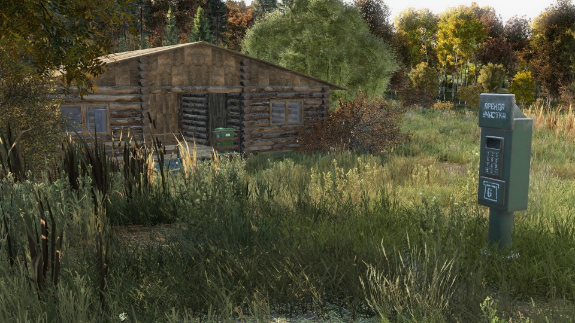

🏠 Строительство и базы
Кастомная система баз с автоматической арендой участков. Игрок выбирает свободное место, арендует его и развивает базу без ожидания одобрения администрации.
- талоны аренды у строительного трейдера;
- столб аренды вместо обычного флага;
- готовые домики с кодлоками, водой и подсветкой;
- декор и мебель у строителя или в игровом мире.
Подробнее про готовые дома →